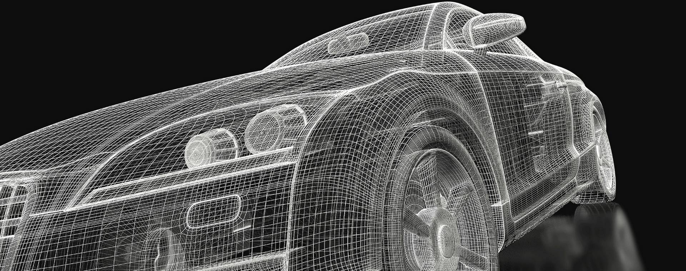

1.Растровая графика — это изображения, составленные из пикселов — маленьких цветных квадратиков, размещенных в прямоугольной сетке. Пиксел — это самая маленькая единица цифрового изображения.
2.Векторная графика — способ представления объектов и изображений (формат описания) в компьютерной графике, основанный на математическом описании элементарных геометрических объектов, обычно называемых примитивами, таких как: точки, линии, сплайны, кривые Безье, круги и окружности, многоугольники.
3.Фракталом называется структура, состоящая из частей, которые в каком-то смысле подобны целому. Одним из основных свойств фракталов является самоподобие. Объект называют самоподобным, когда увеличенные части объекта походят на сам объект и друг на друга. Перефразируя это определение, можно сказать, что в простейшем случае небольшая часть фрактала содержит информацию обо всем фрактале.

4.Трёхмерная графика — раздел компьютерной графики, посвящённый методам создания изображений или видео путём моделирования объёмных объектов в трёхмерном пространстве. 3D-моделирование — это процесс создания трёхмерной модели объекта.
CGI графика — изображения, получаемые компьютером на основе расчёта и использующиеся в изобразительном искусстве, печати, кинематографических спецэффектах, на телевидении и в симуляторах. Созданием движущихся изображений занимается компьютерная анимация, представляющая собой более узкую область графики CGI.